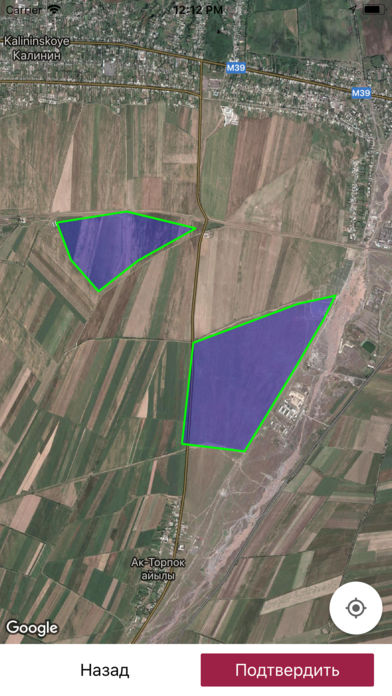
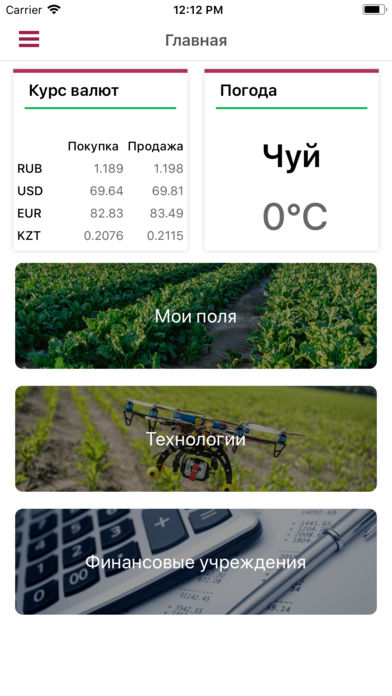
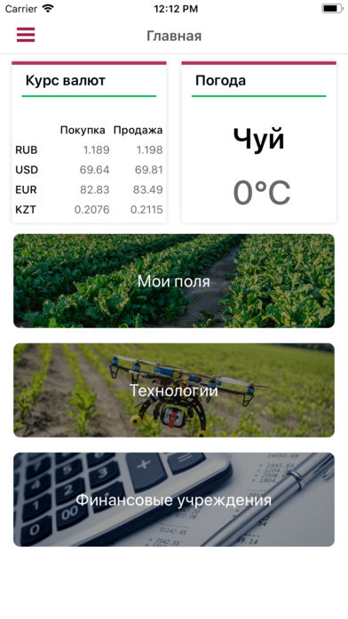
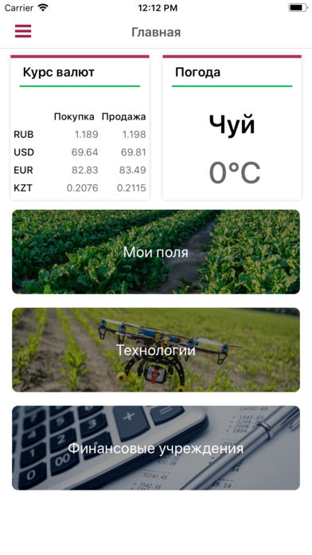

Kant Kyzylcha<
"Kant Kyzylcha" is a mobile application for Kyrgyz farmers growing sugar beet. Here you can find the necessary technology for the erection of sugar beet, information on various types of services and suppliers with contacts and addresses. Moreover, you can keep a record of your fields, marking them on the map, and calculating the budget for each of all your fields.

 


Links for downloading the app: